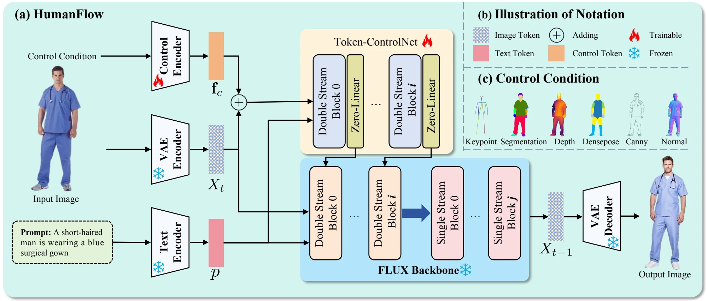
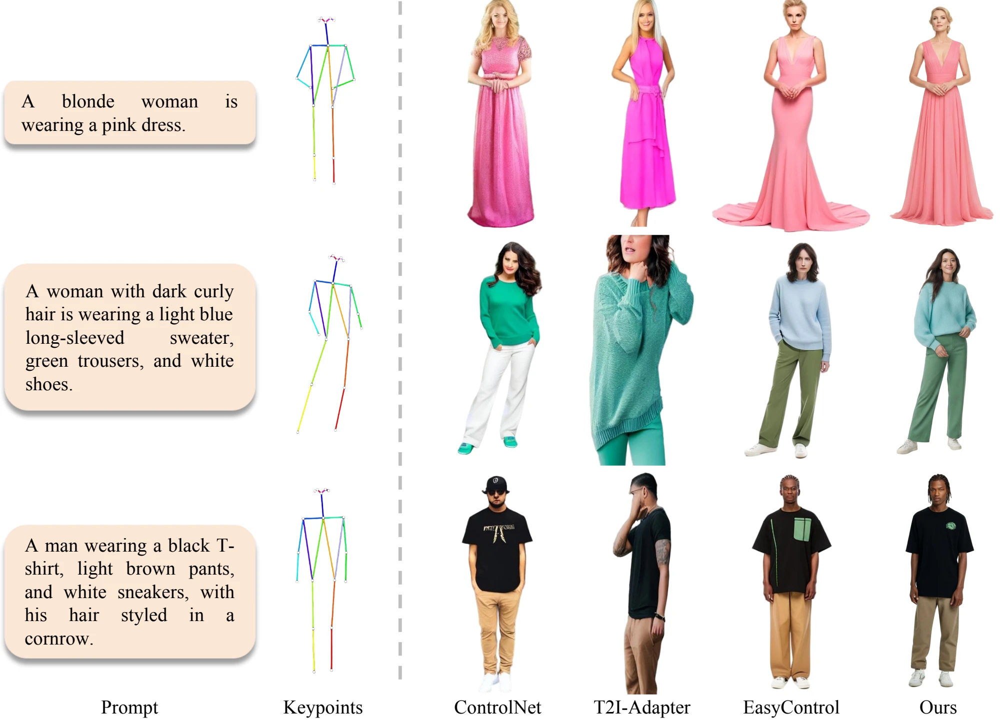
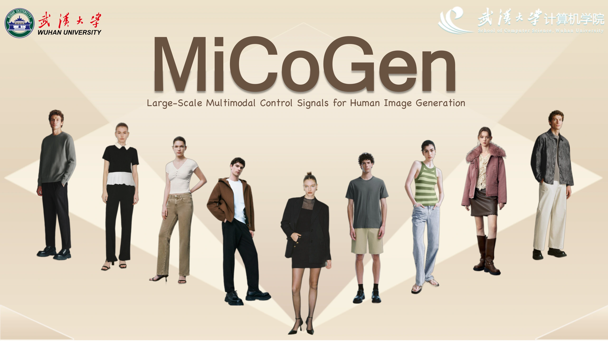
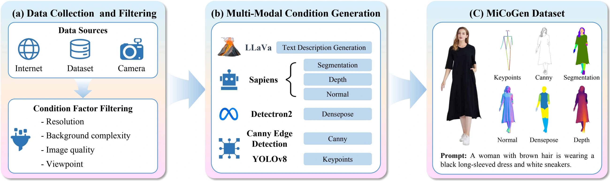
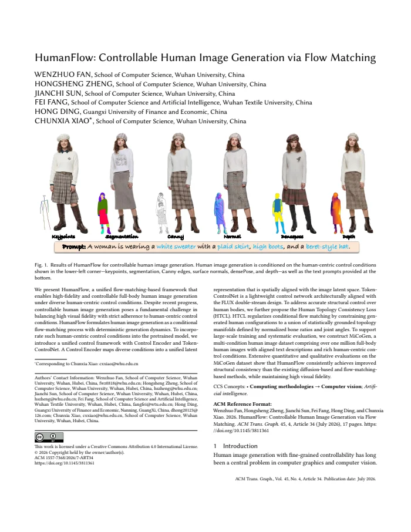

Abstract
We present HumanFlow, a unified flow-matching-based framework that enables high-fidelity and controllable full-body human image generation under diverse human-centric control conditions. Despite recent progress, controllable human image generation poses a fundamental challenge in balancing high visual fidelity with strict adherence to human-centric control conditions. HumanFlow formulates human image generation as a conditional flow-matching process with deterministic generation dynamics. To incorporate such human-centric control conditions into the pretrained model, we introduce a unified control framework with Control Encoder and Token-ControlNet. A Control Encoder maps diverse conditions into a unified latent representation that is spatially aligned with the image latent space. Token-ControlNet is a lightweight control network architecturally aligned with the FLUX double-stream design. To address accurate structural control over human bodies, we further propose the Human Topology Consistency Loss (HTCL). HTCL regularizes conditional flow matching by constraining generated human configurations to a union of statistically grounded topology manifolds defined by normalized bone ratios and joint angles. To support large-scale training and systematic evaluation, we construct MiCoGen, a multi-condition human image dataset comprising over one million full-body human images with aligned text descriptions and rich human-centric control conditions. Extensive quantitative and qualitative evaluations on the MiCoGen dataset show that HumanFlow consistently achieves improved structural consistency than the existing diffusion-based and flow-matching-based methods, while maintaining high visual fidelity.
Method
A unified control framework for conditional flow matching.

Control EncoderMaps diverse control conditions into a unified, spatially aligned latent representation.
Token-ControlNetInjects control into the FLUX double-stream architecture through a lightweight network.
Topology consistencyRegularizes bone proportions and joint angles for anatomically plausible human bodies.
Controllable Generation
Qualitative comparisons under six human-centric control conditions.

MiCoGen Dataset
1,019,124 full-body human images, with aligned text and six control annotations.

Dataset Construction

1. Collect & filterGather images from the internet, existing datasets and cameras. Filter for resolution, image quality, viewpoint and background complexity.
2. Generate annotationsCreate text descriptions with LLaVA and aligned controls with YOLOv8, Sapiens, Detectron2 and Canny edge detection.
3. Assemble MiCoGenPair each full-body image with its text description, keypoints, segmentation, Canny edges, normals, DensePose and depth.
Technical Paper

ACM Transactions on Graphics, Volume 45, Issue 4, Article 34 (2026).
doi:10.1145/3811361
Citation
@article{fan2026humanflow,
title = {HumanFlow: Controllable Human Image Generation via Flow Matching},
author = {Fan, Wenzhuo and Zheng, Hongsheng and Sun, Jianchi and
Fang, Fei and Ding, Hong and Xiao, Chunxia},
journal = {ACM Transactions on Graphics},
volume = {45},
number = {4},
articleno = {34},
numpages = {17},
year = {2026},
month = jul,
doi = {10.1145/3811361}
}Contact
For questions, please contact Wenzhuo Fan or Chunxia Xiao.
The official implementation and pretrained checkpoints are being prepared for release. Follow the GitHub repository for updates.